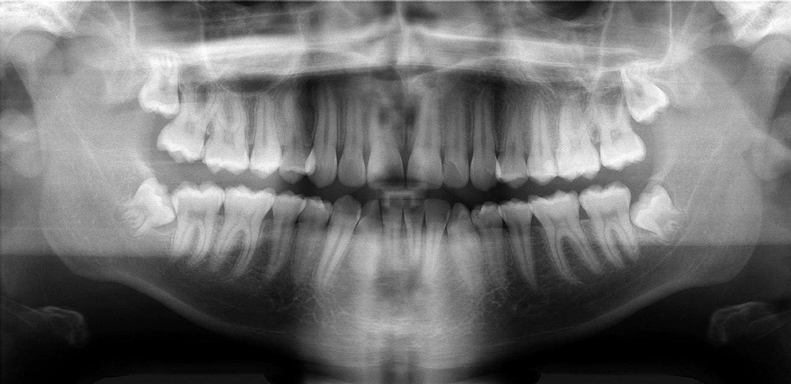

Ficha del catálogo
Ortopantomografía (radiografía panorámica dental)
- Sistema
- Óseo
- Modalidad
- RX
- Región
- Maxilares
- Dificultad
- Intermedio
Estudio panorámico que despliega en una sola imagen ambos maxilares, la totalidad de las piezas dentarias, los cóndilos mandibulares y los senos maxilares. El tubo y el receptor giran alrededor de la cabeza describiendo una trayectoria curva.
Técnica
Paciente de pie o sentado, mordiendo un dispositivo que fija la posición, con el plano oclusal ligeramente descendente y la columna cervical recta. La colocación es crítica: Pequeños errores generan distorsiones importantes.
Qué observar
- Fórmula dentaria completa, incluyendo piezas retenidas y terceros molares
- Caries como zonas radiolúcidas en la corona, y restauraciones como material radiopaco
- Nivel del hueso alveolar, cuya pérdida indica enfermedad periodontal
- Lesiones periapicales: Imágenes radiolúcidas redondeadas en el ápice de la raíz
- Cóndilos mandibulares simétricos y bien posicionados
- Senos maxilares aireados y conducto dentario inferior en su trayecto
Hallazgos
Estudio panorámico con estructuras dentomaxilares simétricas, piezas dentarias y hueso alveolar de aspecto conservado.
Perlas
La ortopantomografía siempre distorsiona algo: Aumenta el tamaño verticalmente y varía la magnificación en distintas zonas. Es excelente como visión general, pero no sirve para medir con precisión ni para valorar detalle fino, y en esos casos se recurre a la tomografía de haz cónico.
Diagnóstico diferencial
- Lesión periapical inflamatoria
- Es una radiolucidez redondeada centrada en el ápice de un diente con caries profunda o tratamiento previo, y con pérdida de la lámina dura.
- Quiste odontogénico
- Aparece como una lesión radiolúcida bien delimitada, con borde cortical fino, que puede desplazar dientes y expandir el hueso sin destruirlo.
- Tumor odontogénico
- Muestra bordes menos definidos, aspecto multilocular o contenido mixto, reabsorción radicular y expansión ósea más agresiva.
- Enfermedad periodontal
- La pérdida ósea es horizontal o vertical a lo largo de las crestas alveolares, generalizada y sin masa focal.
- Fractura mandibular
- Se identifica una línea que interrumpe las corticales mandibulares, con frecuencia doble por el mecanismo en anillo del hueso, y escalón en el borde alveolar.
- Sinusitis maxilar
- El seno maxilar aparece opacificado o con engrosamiento mucoso, con paredes óseas conservadas, y a veces se relaciona con un foco dentario.
Simuladores
- Las imágenes fantasma son la trampa clásica de la panorámica: Estructuras como la rama mandibular contralateral, pendientes o el hueso hioides se proyectan borrosas, aumentadas y en el lado opuesto y a mayor altura.
- La sombra aérea del paladar blando, de la lengua y de la vía aérea crea bandas radiolúcidas que se confunden con lesiones sobre los ápices maxilares.
- La fosa submandibular es una depresión anatómica normal que aparece como radiolucidez bien delimitada por debajo de los molares inferiores.
- Los errores de posicionamiento distorsionan el tamaño de los dientes: Si el paciente adelanta el mentón los incisivos se ven estrechos y borrosos, y si lo retrasa se ven anchos.
Por modalidad
- RX
- La panorámica ofrece una visión general de ambos maxilares y de toda la dentición en una sola imagen y con baja dosis, y las radiografías periapicales aportan el detalle fino de cada diente.
- TC
- La tomografía de haz cónico proporciona una valoración tridimensional sin distorsión, indispensable para implantes, terceros molares en relación con el conducto dentario y patología compleja.
- RM
- Se emplea para la articulación temporomandibular, en especial para el disco articular, y para la extensión en partes blandas de lesiones tumorales o infecciosas.
- US
- Aporta información sobre glándulas salivales, adenopatías cervicales y colecciones superficiales, y guía punciones.
Protocolo
El paciente se coloca de pie o sentado, muerde un dispositivo que fija la posición de los incisivos, apoya el mentón en el soporte y mantiene la columna cervical recta y los hombros bajos. El plano de Frankfort debe quedar paralelo al suelo y el plano sagital medio centrado; se pide cerrar los labios y colocar la lengua contra el paladar para eliminar la banda aérea. Antes del estudio se retiran todos los objetos metálicos del cuello y de la cabeza. El tubo y el receptor giran describiendo una trayectoria elíptica alrededor del cráneo mientras se mantiene la inmovilidad, con una exposición de varios segundos.
Clasificación
La panorámica se lee con apoyo de sistemas de identificación dentaria estandarizados que numeran cada pieza por cuadrante y posición, lo que evita ambigüedades en el informe. La posición de los terceros molares se describe con clasificaciones que valoran la angulación de la pieza y su relación con la rama y con el plano oclusal, porque determinan la dificultad quirúrgica. En periodoncia se gradúa la pérdida ósea según el porcentaje de raíz afectada, y en la valoración de lesiones óseas maxilares se aplican criterios de agresividad basados en los bordes, la locularidad y el efecto sobre las estructuras vecinas.
Errores frecuentes
- Tomar una imagen fantasma por una lesión real, error que se evita conociendo que aparece en el lado opuesto, más alta y desenfocada.
- Medir sobre la panorámica para planificar implantes, cuando su magnificación es variable y exige tomografía de haz cónico.
- Concentrarse en los dientes y no revisar cóndilos, senos maxilares, conducto dentario inferior y el resto del campo.
- No detectar errores de posicionamiento del paciente, que producen distorsiones capaces de simular o de ocultar patología.

panoramica ortopantomografia dental maxilar mandibula caries odontologia